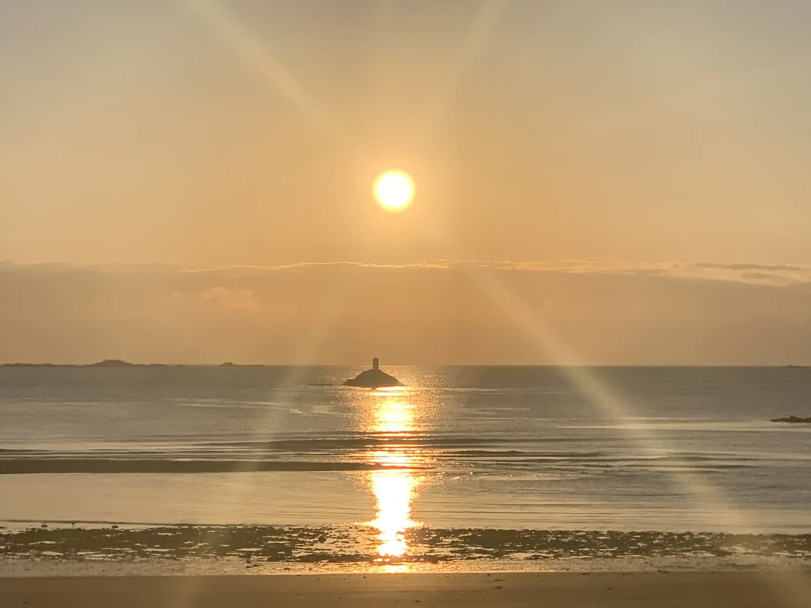
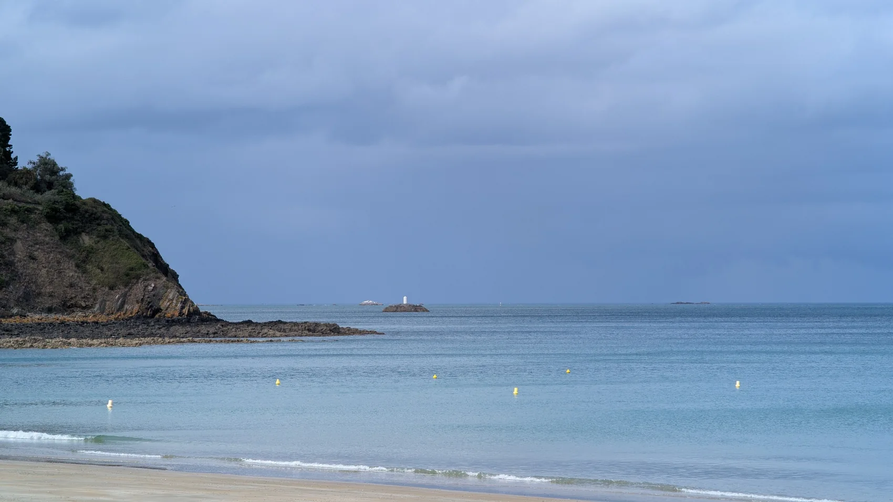

Un dernier hommage.
Face à l'horizon.
Un moment intime en mer, pour se souvenir, se recueillir et accompagner un au revoir dans la sérénité.
Un moment
à votre image.
Certains horizons invitent au silence et à la mémoire.
Au départ de Binic ou de Saint-Quay-Portrieux, Armor Loisirs Nautiques propose un accompagnement maritime attentif pour les familles souhaitant organiser un moment de recueillement en mer.
Le déroulement, le lieu possible, le nombre de participants et les conditions de navigation sont échangés sereinement avec Julien, avant toute sortie.
Parler à Julien
Avec attention,
à chaque étape.
Un premier échange
Vous exposez vos souhaits et vos questions. Julien vous présente les possibilités de sortie en mer.
Une sortie préparée
En fonction de la météo, de la réglementation et des participants, la navigation est organisée avec discrétion.
Un temps de recueillement
Un moment calme et respectueux, laissé à la sensibilité et aux souhaits de chacun.

Dans le respect
de chacun.
La dispersion des cendres en mer relève d'un cadre légal particulier. ALN propose la prestation de navigation et d'accompagnement ; les modalités de la dispersion, les déclarations et l'intervention éventuelle d'un opérateur funéraire habilité doivent être vérifiées avant l'organisation.
Julien peut vous orienter vers les interlocuteurs appropriés pour préparer ce moment dans de bonnes conditions.
Consulter les informations officielles ↗Un dernier hommage,
à votre image.
Julien prend le temps de vous écouter et de préparer ce moment avec discrétion.